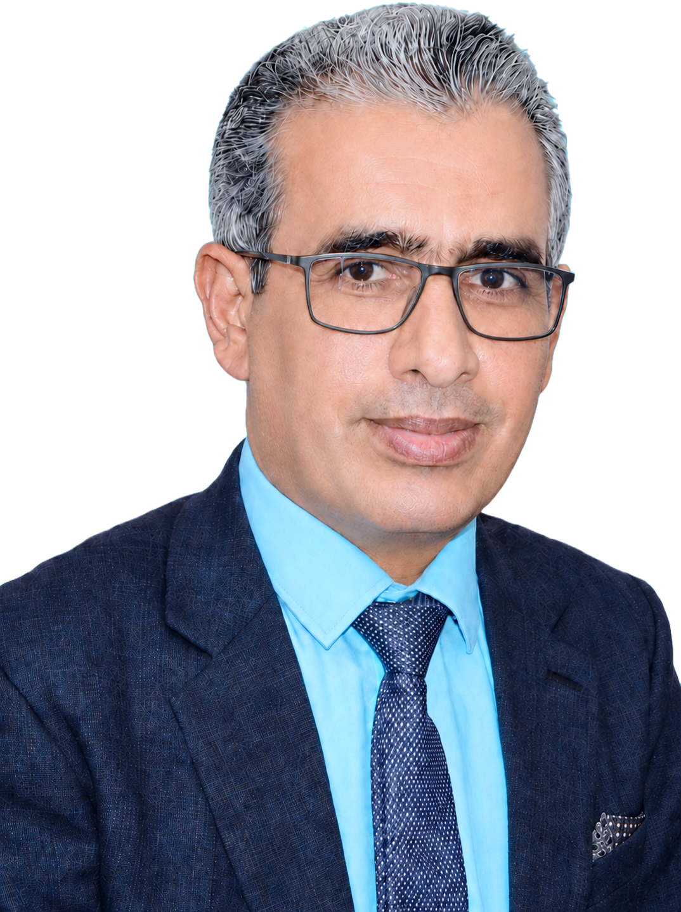

2026
Conference
Smart IoT-Based Waste Management System
8th International Youth Conference on Radio Electronics, Electrical and Power Engineering (REEPE 2026), Moscow, Russian Federation
Senior Lecturer of Information Technology and Dean Faculty of Sciences
Abdulrahman Al-Sumait University (SUMAIT), Zanzibar, Tanzania

I am a Senior Lecturer of Information Technology at the Department of Mathematics and Computer Science, Abdulrahman Al-Sumait University, Zanzibar, Tanzania. My academic and research work focuses on the Internet of Things, wireless sensor networks, Green IoT, energy-efficient communication, smart systems, automation, and AI-enabled applications.
I have substantial experience in teaching, research supervision, curriculum development, computing education, external examination, academic assessment, and scholarly service. I have also contributed to programme development, curriculum review, academic quality processes, and university policy development.
My scholarly service includes editorial work, journal peer review, conference review, and academic assessment activities. I currently serve as Dean of the Faculty of Science, alongside my teaching, research, supervision, and professional service responsibilities.
IoT-based sensing, monitoring, communication, and connected applications for practical environments.
Energy-aware routing, clustering, wireless communication, and network lifetime improvement.
Energy harvesting, low-power communication, and sustainable computing solutions for smart systems.
AI-supported analytics, prediction, automation, and intelligent decision support for connected systems.
Cloud platforms, real-time data monitoring, dashboards, and analytics for IoT and smart environments.
Practical digital systems for safety, security, automation, education, and sustainable community services.
Specialization: Internet of Things. Thesis: Greening and Optimizing Energy Consumption of Wireless Nodes in the Internet of Things: Investigations and Improvements.
CGPA 8.75/10, First Division with Distinction. Dissertation: Performance Analysis of Parameters Affecting Power Efficiency in Networks.
First Division with Distinction, First Rank. Final project: Computer-Based Radio Station and RF Remote Control.
Supplementary qualification. First Division with Distinction, Excellent 92.55%, Fourth Rank.
First Division.
For the latest citation count and profile metrics, use the Google Scholar profile.
8th International Youth Conference on Radio Electronics, Electrical and Power Engineering (REEPE 2026), Moscow, Russian Federation
International Congress on Engineering and Technology for Sustainable Development (ETSD 2026), University of Buraimi, Oman
Journal of Soft Computing and Data Mining, Vol. 6, No. 1, pp. 138-149
17th IEEE International Conference on Computational Intelligence and Communication Networks (CICN 2025), NIT Goa, India
International Conference on Green Energy, Computing and Sustainable Technology (GECOST 2025), Miri, Sarawak, Malaysia
Proceedings of Sixth Doctoral Symposium on Computational Intelligence (DoSCI 2025), Lecture Notes in Networks and Systems, Vol. 1496
Journal of Soft Computing and Data Mining, Vol. 5, No. 2, pp. 1-14
Expert Systems with Applications, Elsevier
Array, Elsevier, Vol. 23, Article 100361
Journal of Intelligent Systems and Internet of Things, Vol. 12, No. 2, pp. 44-64
Advances in Science and Engineering Technology International Conferences (ASET 2024), Abu Dhabi, UAE
IEEE Access, Vol. 11, pp. 131964-131978
Scientific African, Elsevier, Article e01807
Scientific African, Elsevier, Vol. 19, Article e01577
Environmental Research, Elsevier, Vol. 217, Article 114843
1st International Conference on the Advancements of Artificial Intelligence in African Context (AAIAC 2023), Arusha, Tanzania
7th International Conference on Electrical, Control and Computer Engineering (InECCE 2023), Malaysia
International Mobile, Intelligent, and Ubiquitous Computing Conference (MIUCC 2023), Cairo, Egypt
Proceedings of the First International Conference on Advances in Computer Vision and Artificial Intelligence Technologies (ACVAIT 2022), pp. 422-430
IEEE Access, Vol. 10
International Journal on Technical and Physical Problems of Engineering (IJTPE), Vol. 14, No. 3
Journal of Soft Computing and Data Mining, Vol. 3, No. 1, pp. 58-67
International Conference on Advances in Computer Vision and Artificial Intelligence Technologies (ACVAIT 2022), Aurangabad, India
2nd International Conference on Emerging Technologies and Intelligent Systems (ICETIS 2022), LNNS Vol. 573
IEEE Access, Vol. 9, pp. 154975-155002
International Journal of Computing and Digital Systems, Vol. 10, No. 1, pp. 321-331
IEEE International Conference of Modern Trends in Information Technology Industry (MTICTI 2021), Al-Razi University, Yemen
4th International Symposium on Agents, Multi-Agent Systems and Robotics (ISAMSR 2021), Malaysia
7th International Conference on Software Engineering and Computer Systems (ICSECS 2021), Malaysia
Bulletin of Electrical Engineering and Informatics, Vol. 9, No. 6
Procedia Computer Science, Elsevier, Vol. 171
10th IEEE International Conference on Control System, Computing and Engineering (ICCSCE 2020), Penang, Malaysia
9th International Conference on Software and Computer Applications (ICSCA 2020), Malaysia
Journal of Ambient Intelligence and Humanized Computing, Springer Nature, Vol. 10, pp. 1571-1596
IEEE International Conference on Electrical, Electronics, Computers, Communication, Mechanical and Computing (EECCMC 2018), Tamil Nadu, India
IEEE 3rd International Conference on Applied and Theoretical Computing and Communication Technology (iCATccT 2017), Karnataka, India
International Journal of Electrical, Electronics and Computer Systems, Vol. 6, No. 9, pp. 155-161
International Journal of Engineering Research and Applications, Vol. 5, No. 12, pp. 71-82
IEEE 7th International Conference on Communication Systems and Networks (COMSNETS 2015), Bengaluru, India
Awarded by the College of Engineering and Technology, Kakatiya University, India, in recognition of excellent completion of the Ph.D. degree.
International scholarship for PhD studies at Kakatiya University, Warangal, India.
International scholarship for Master’s studies at the Central University of Hyderabad, Hyderabad, India.
Awarded by the President of Yemen for excellence in the Bachelor’s degree graduation batch, First Division with Distinction, First Rank.
Hodeidah University, First Division with Distinction
New Horizon Institute of Spoken English, Hyderabad
AmidEast Center, Sanaa, Score 467, TWE 4.0
Arizona Institute for Languages and Translation
Hodeidah University
Chukwani, Mjini Magharibi
Zanzibar, Tanzania
P.O. Box 1933
Google Scholar
ORCID
Scopus
Web of Science
ResearchGate
DBLP
Semantic Scholar
LinkedIn